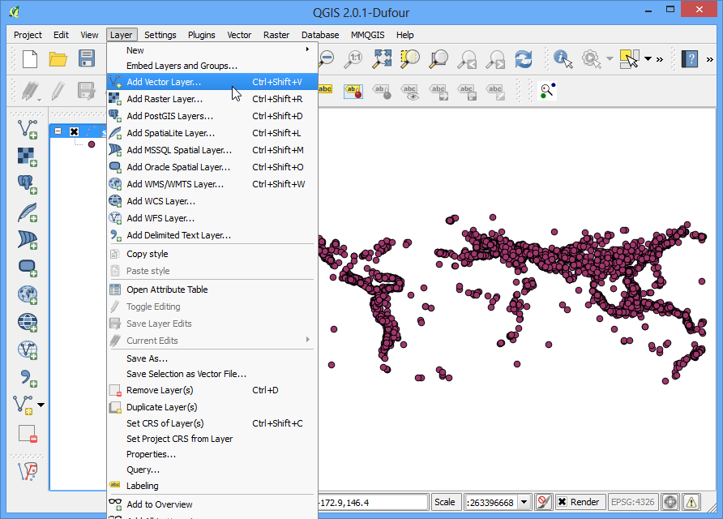
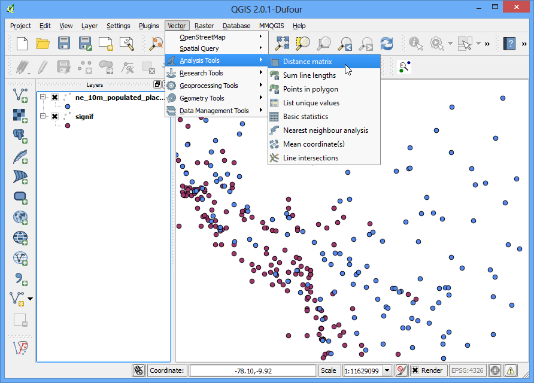

최근린 분석
[ Download PDF A4 Letter ]
GIS는 객체들간의 공간관계를 분석하는데 매우 유용합니다. 그러한 분석으로 주어진 객체가 어떤 객체에 가장 가까운가를 찾는 것이 있습니다. QGIS는 **Distance Matrix**라는 하는 툴을 가지고 있는데 그러한 분석을 돕습니다. 이 예제에서는 2개의 데이터셋을 사용할 것이고 하나의 레이어의 어떤 점이 두번째 레이어의 어떤 점과 가장 가까운가를 찾을 것입니다.
과업 개요
이미 알려져 있는 주요 지진발생 위치가 주어지면 지진이 발생한 곳에서 가장 가깝게 인구가 밀집한 지역을 찾습니다.
과정
메뉴: 레이어 –> 구분자로 분리된 텍스트 레이어를 추가...:menuselection:`Layer –> Add Delimited Text Layer`를 열고 다운로드한 ``signif.txt``파일을 찾습니다.

이 파일은 탭으로 구분된 파일 *tab-delimited file*이므로 파일포맷 :guilabel:`File format`으로 구분자정의를 체크하고 탭 :guilabel:`Tab`을 선택합니다. X필드 :guilabel:`X field`와 Y필드 :guilabel:`Y field`가 자동적으로 채워집니다. 확인 :guilabel:`OK`를 클릭합니다.
주석
QGIS에 파일이 불러들여지는 동안 몇 에러메세지를 볼 수도 있습니다. 이것들은 유효한 에러이고 파일의 몇 행은 불러들여지지 않을 것입니다. 이 예제에서는 무시할 수 있습니다.

지진 데이터셋은 위도/경도 좌표를 갖고 있으므로 좌표계 선택 Coordinate Reference System Selector 다이알로그에서 CRS는 WGS 84 EPSG:436 를 선택합니다.

지진 포인트가 QGIS로 불러들여지고 나타납니다. 인구밀집지역 레이어도 열어보겠ㅅㅂ니다. 메뉴 레이어 –> 레이어 추가 –> 벡터레이어 추가 :menuselection:`Layer –> Add Vector Layer`로 갑니다.

다운로드한 ``ne_10m_populated_places_simple.zip``파일을 찾고 열기 :guilabel:`Open`를 클릭합니다. 추가할 레이어 선택 :guilabel:`Select layers to add...`다이알로그에서 ``ne_10m_populated_places_simple.shp``를 선택합니다.

두 개의 데이터셋을 확대 및 탐색해 봅니다. 각각의 보라색 점은 중요한 지진이 발생한 위치를 나타내고, 각각의 파란색 점은 인구밀집지역을 나타냅니다. 지진레이어에서 각 점에 대해 인구밀집지역으로부터 가장 가까운 점을 찾는 방법이 필요합니다.

메뉴 벡터 –> 분석 도구 –> 거리행렬계산하기 :menuselection:`Vector –> Analysis Tools –> Distance Matrix`로 갑니다.

여기서 입력 점 레이어로써 지진 레이어 signif 를, 대상 점 레이어로써 인구밀집지역 ``ne_10m_populated_places_simple``를 선택합니다. 또한 이러한 각 레이어로부터 결과가 어떻게 보여질지 고유필드를 선택할 필요가 있습니다. 이번 분석에서는 가까운 점으로 **1**만 찾으므로 최근린점만을 사용 :guilabel:`Use only the nearest(k) target points`을 체크하고 :guilabel:`1`을 입력합니다. 출력파일명으로 ``matrix.csv``을 입력하고 OK를 클릭합니다.
주석
알아두면 편리한 것으로 오로지 1 레이어만 가지고 분석을 수행할 수도 있습니다. 입력 및 출력 두 개의 레이어를 동시에 선택합니다. 결과는 여기서 사용했던 것 처럼 다른 레이어 대신 같은 레이어로부터 최근린이 될 것입니다.

일단 파일이 생성되면, 노트패드 혹은 다른 어떤 텍스트 에디터에서 그것을 볼 수 있습니다. QGIS는 CSV파일을 불러들일 수 있습니다. 그래서 그것을 QGIS에 추가하고 거기서 봅니다. 메뉴 레이어 –> 구분자로 분리된 텍스트 레이어 추가... :menuselection:`Layer –> Add Delimited Text Layer...`로 갑니다.

새롭게 만들어진 ``matrix.csv``파일을 찾습니다. 이 파일이 텍스트 컬럼이기때문에 지오메트리 정의 :guilabel:`Geometry definition`에서 지오메트리가 아님 :guilabel:`No geometry (attribute only table)`를 선택합니다. :guilabel:`OK`를 클릭합니다.

테이블로 불러들여진 CSV파일을 보게 될 것입니다. 테이블 레이어를 우측클릭하고 속성테이블열기 :guilabel:`Open Attribute Table`를 선택합니다.

이제 결과의 내용을 볼 수 있을 겁니다. InputID 필드는 지진레이어의 필드명을 담고 있습니다. TargetID 필드는 지진발생지점으로 가장 가까운 인구밀집지역으로부터의 객체명을 포함고 있습니다. :guilabel:`Distance`필드는 2점간의 거리입니다.
주석
거리 distance*의 계산은 레이어의 좌표계를 사용한 것임을 기억해야 합니다. 여기서 거리는 원 레이어 좌표가 degree이기 때문에 *decimal degrees 단위가 될 것입니다. 거리의 단위로 미터를 원한다면 툴을 구동시키기 전에 레이어를 재투영해야 합니다.

이것이 원래 찾던 결과와 가장 가까운 것입니다. 몇 사용자들에게 이 테이블은 충분할 것입니다. 그러나 이 결과를 테이블 결합 **Table Join**을 사용해서 원 지진레이어에 통합시킬 수 있습니다. 지진 레이어를 우측클릭하고 속성 :guilabel:`Properties`을 선택합니다.

결합 Joins 탭으로 가서 + 버튼을 클릭하십시오.

분석결과 (matrix.csv)로 부터 이 레이어를 결합하고자 합니다. 같은 값을 갖는 각 레이어로부터 필드를 선택할 필요가 있습니다. 아래와 같이 필드를 선택합니다.

결합 :guilabel:`Joins`탭에서 결합이 나타날 것입니다. :guilabel:`OK`를 클릭하십시오.

이제 우측클릭을 통해 지진 레이어의 속성테이블을 열고 속성테이블 열기를 선택합니다.

모든 지진 객체에 대해 최근린(인구밀집지역에 가장 가까운) 그리고 최근린 거리의 속성을 가지는 것을 볼 수 있을 것입니다.